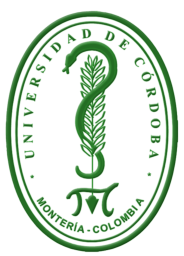
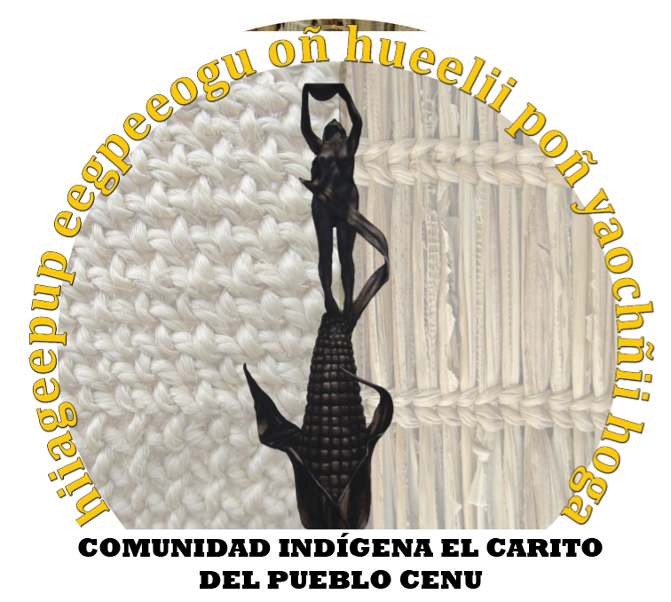

IMPLEMENTACIÓN DE UNA ESTRATEGIA DE COMUNICACIÓN PARA EL FORTALECIMIENTO
DE LA IDENTIDAD CULTURAL DE LA COMUNIDAD INDÍGENA “EL CARITO” DEL PUEBLO ZENÚ

Inicio
Bailes Típicos y Música Tradicional
Tradiciones Artesanales
Gastronomía
La Chicha y sus Tres Modalidades